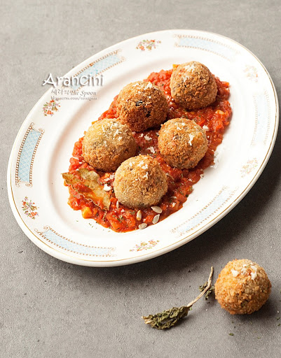

훈니의 포도 Recipe
진미채 고추장볶음
월남쌈
진미채 간장볶음
식빵계란토스트
미역국
부추무침
찬열떡볶이
아란치니
제육
아란치니
소스
양파 4분의1개 다진거ㅈ볶도가 홀토마토 넣고, 따뜻한물 한컵에 월계수잎 한개 넣고, 소금, 설탕 간 , 후주15분
메인
양파다진거, 당근, 스팸, 버섯, 등 넣고 볶다가 밥넣고 볶다가, 따뜻한물도 넣고 볶다가, 소금간 적당히 하고, 모짜렐라 적당히 140g느낌으로 넣고 볶으연 끝
그리고 밀가루 묻히고 계란 묻히고 빵가루 충분히 묻혀서 노릇노르해질만큼 튀긴다
